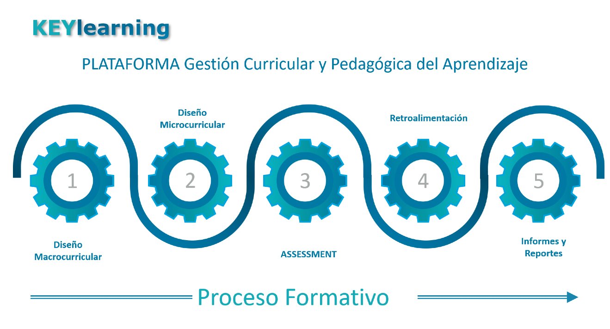

KEYlearning
Plataforma de Gestión Curricular y Seguimiento de Resultados de Aprendizajes

Características
- Es una Plataforma para gestionar totalmente el proceso formativo, desde la construcción y/o modificación de los currículos, de manera integrada y automatizada, hasta el proceso Assessment de cuantificación y cualificación de los logros de resultados de aprendizajes.
- Se constituye en un Sistema de Seguimiento de Resultados de Aprendizajes.
- Es una solución SaaS (Software as a Service) y Cloud, que se ofrece como un servicio seguro en la nube de AWS (Amazon Web Services), lo que incluye mantención y soporte permanente a cada Institución que usa la plataforma. Con ello, la institución no requiere destinar recursos a hardware o software que deba soportar y mantener.
- En la plataforma Nativa KL es posible Customizar a las necesidades de la IES.
Beneficios
- Facilita la definición y desarrollo de los Perfiles de Egreso en Competencias o Resultados de Aprendizajes.
- Simplifica y facilita la construcción del currículo, a partir del Perfil de Egreso, integrando todos los productos macro-curriculares (perfil, matrices de tributación, plan de estudio, malla curricular).
- Facilita y sistematiza la integración macro y micro-curricular, conectando en línea con los Programas de Asignaturas, secciones y generando la Planificación, Ruta de Aprendiza o Syllabus del periodo semestral o anual.
- Agiliza y potencia el proceso de Assessment efectivo de logros y seguimiento de resultados de aprendizaje a nivel individual, por asignaturas, sección, carrera y global.
- El proceso de Assessment permite articular las competencias, resultados de aprendizajes, indicadores de logros en base al perfil de egreso, en base a notas y porcentaje de logros de los respectivos indicadores.
- Facilita a los profesores elaborar su planificación y evaluaciones en línea, obteniendo los resultados automatizados.
- Permite a los estudiantes conocer sus programas y planificación en línea y obtienen retroalimentación automática de sus evaluaciones.
- Evidencia la calidad de gestionar sistemáticamente los procesos docentes para los sistemas de Acreditación.
- Genera reportes automatizados, incluyendo seguimiento de la progresión académica de los estudiantes.
Funcionalidades (integradas y automatizadas)
- Construye los Perfiles de Egreso en base a Competencias o RA.
- Genera matrices para desagregar las Competencias en resultados de aprendizajes por Ciclos Formativos y de creación de asignaturas.
- Diseña y crea en línea el Plan de Estudio, la Malla Curricular, los Programas de Asignatura y su Ruta de Aprendizaje o Planificación (syllabus) en forma integrada, articulada y automatizada.
- Diseña y crea en línea los instrumentos de evaluación.
- El Assessmet genera y aplica las evaluaciones concatenadas con los indicadores de logro de cada RA.
- Genera Actas digitales en línea para los comités de carrera y de currículo u otros.
- Facilita el proceso de caracterización a los nuevos estudiantes, a través de instrumentos propuestos o a requerimiento de la IES.
- Genera reportes nativos de gestión curricular y de assessment, además de otros que defina la IES.
Contáctanos
KEY LEARNING SPA
Av. Américo Vespucio Sur #107, of. 207, Las Condes, Santiago.
contacto@klearning.cl